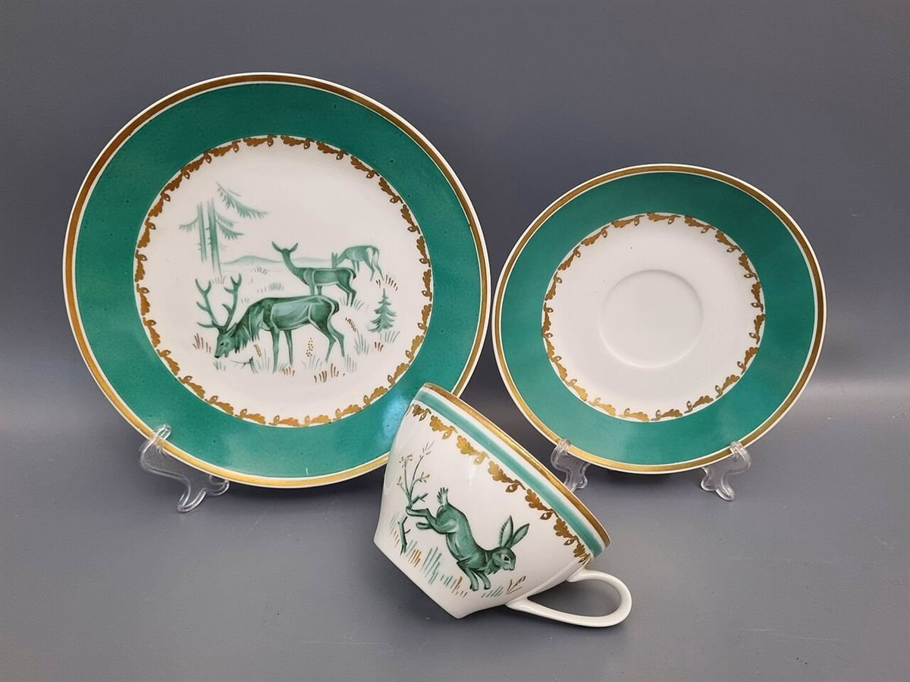
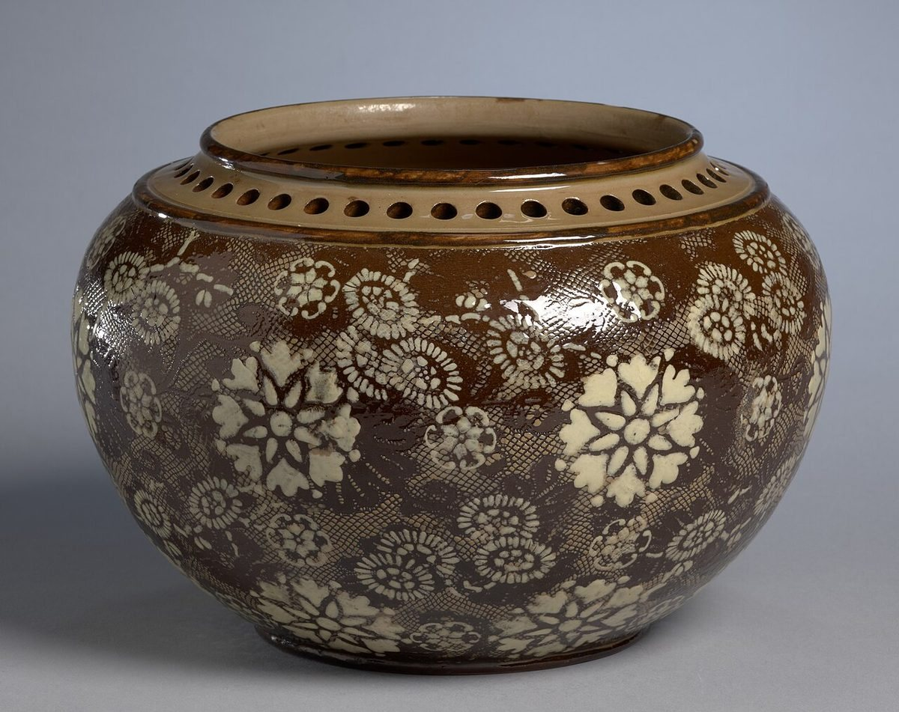

アクセス
福井県小浜市小浜香取 14 三丁町ながた
地図の位置はご利用の端末により多少ずれて表示される場合があります。
- 住所
- 福井県小浜市小浜香取 14 三丁町ながた
- 営業時間・定休日
- 準備中(お問い合わせください)
- 駐車場
- 準備中(お問い合わせください)
- 最寄り交通
- 準備中(お問い合わせください)


お越しの前に、お電話でご確認ください。Instagramもあわせてご覧ください。(Instagram)
掲載写真はフリー素材のイメージです。店舗の実際の料理・店内・外観ではありません。他地域で撮影されたもの、撮影地が不明なものを含みます。
福井県小浜市小浜香取 14 三丁町ながた
地図の位置はご利用の端末により多少ずれて表示される場合があります。


お越しの前に、お電話でご確認ください。Instagramもあわせてご覧ください。(Instagram)